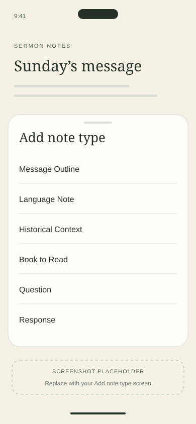

A question when you don’t know where to start.
Morning and Evening pair Scripture with prompts about your feelings, gratitude, and what matters today.
A journal for your days with God. Start with Scripture and a question, keep your prayers and notes together, and revisit what you’ve written through weekly, monthly, quarterly, and year-end Reviews.

Some days you don’t know what to write. Other days, your prayers, reflections, and Sunday notes end up in different places. Journal gives them a place you can return to.
Morning and Evening pair Scripture with prompts about your feelings, gratitude, and what matters today.
Write a personal entry, save a prayer, or take notes from Scripture and a sermon—all in the same journal.
Revisit a prayer, reread what you learned, and use Reviews to reflect on what you recorded over time.
A few guided steps to check in, read Scripture, and put your day into words. Reflect on what you read, then carry it into prayer and the day ahead.
Notice how you’re feeling, reflect on a Psalm, and choose what needs your attention.

Give thanks, reflect on Proverbs, and look toward tomorrow.

Write in the moment, outside Morning and Evening too. There’s room for what happened today, what you’re praying about, and what you’re learning in Scripture.
Write about what happened and how you’re feeling. Open a Heart Journal when you want to write in your own words.
Pray in your own words, follow a guided prayer, or save a request for someone else.
Keep the passage, your observations, and what you’re learning together.
Save what stood out on Sunday so you can return to it during the week.
Write down what you’re thankful for, from an ordinary kindness to an answer to prayer.

Save the outline, a word’s meaning, or a book the speaker mentioned—all within your sermon notes. Choose a note type as you write.
Organize the message’s main points with a numbered, acronym, or simple outline.
Record an original-language word and its meaning.
Keep the background that helps explain the passage, from the setting to a custom mentioned.
Save a recommended title and author so you can look it up later.
Add a Question for something you want to understand, or a Response for what you want to put into practice.

Weekly, monthly, quarterly, and year-end Reviews bring back what you recorded. Revisit what you prayed about, what you learned, and what has changed as you reflect on your life with God.

Revisit the last seven days, then name the prayers and priorities you want to carry into next week.
Look across the month’s entries. Notice patterns, revisit prayers, and consider what needs your attention next.
Reflect on the season, where you see growth, and what you want to continue or leave behind.
Return to meaningful moments, answered prayers, and things you’re still bringing to God as you close the year.
Save what you’re bringing to God. Return to pray again, add an update as things change, and record an answer when you want to remember it.

Use a guided flow when it helps, or write freely when you have something to say. You don’t have to complete every part of Journal to use it.
Guided or openFollow Morning and Evening prompts, or start a personal entry, prayer, or note.
At your paceUse Morning, Evening, or both. Return when you’re ready to write again.
Make it yoursChoose when your week begins and the Bible version you want to use.
Join for early-access and launch updates. Then, if you’d like, tell us what you hope Journal will help with or volunteer to test an unfinished version.
No preorder or payment. Testing is optional.
A journal for daily entries, prayers, Bible-study notes, and sermon notes. Morning and Evening offer guidance through Scripture and reflection; weekly, monthly, quarterly, and year-end Reviews help you look back.
No. Use either flow when it helps, or start a personal entry, prayer, or note on its own.
No. Journal includes Scripture and Christian reflection, but it is primarily a journal, not a devotional-content app.
No. Journal can hold Bible-study notes and Scripture reflections, but it is not a replacement for reading or studying Scripture.
No. You decide whether something is an answer you want to record. Journal preserves what you record.
Both include journaling. Journal puts daily writing, prayers, notes, and Reviews at the center. siFia starts with a specific situation and guides you through reflection with Scripture.
Journal is still being built and tested for iPhone and Android. There is no confirmed launch date yet. Join Early Access for updates.
Join Early Access to hear when Journal is ready to try. No preorder or payment.
Join Early Access